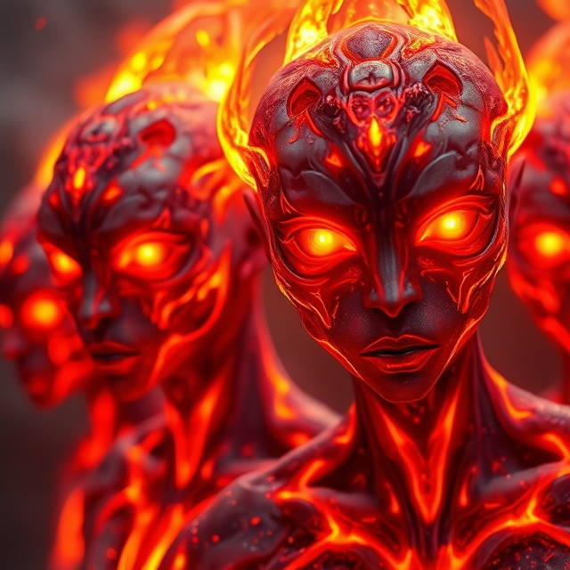
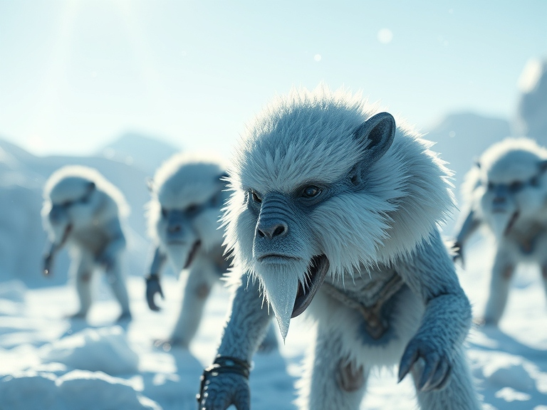
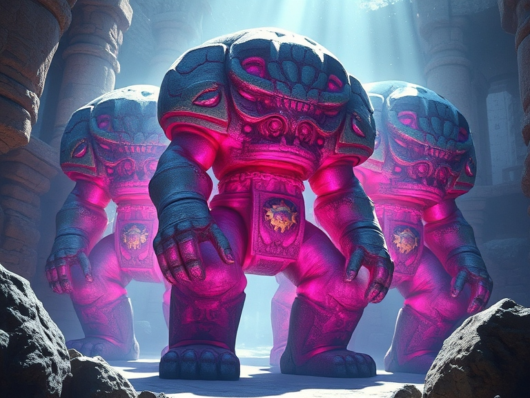
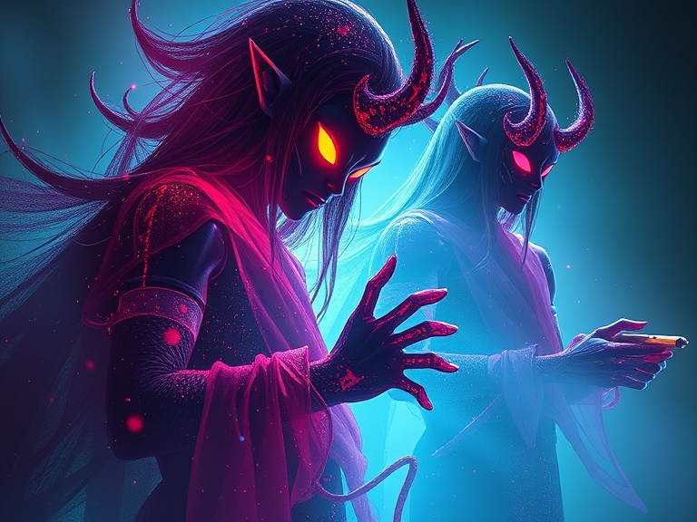
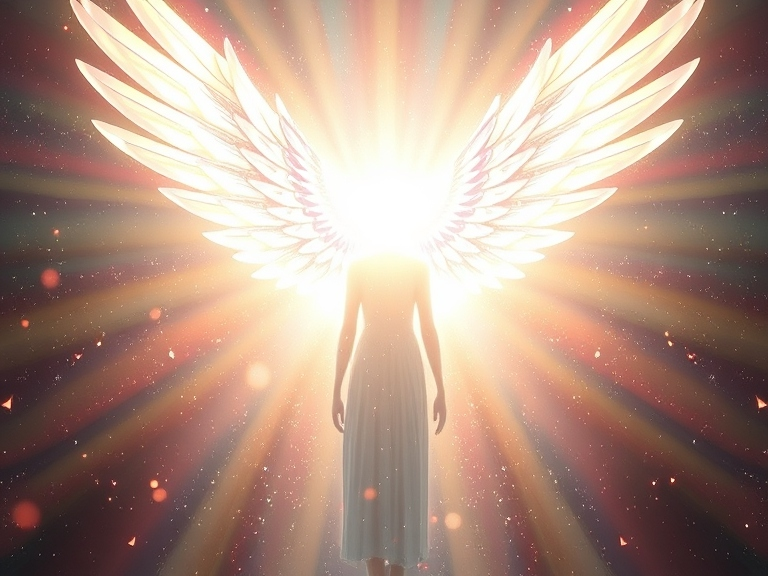
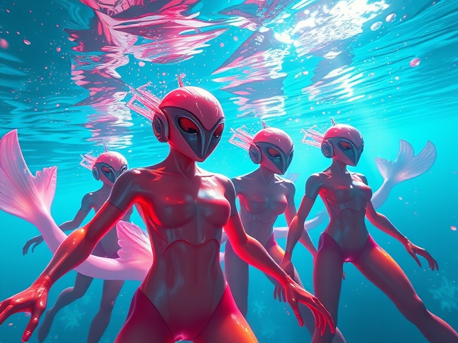
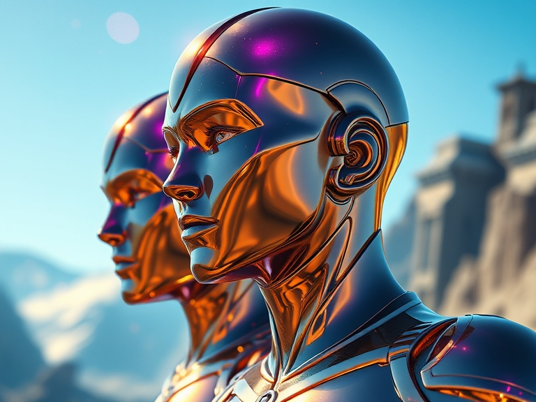
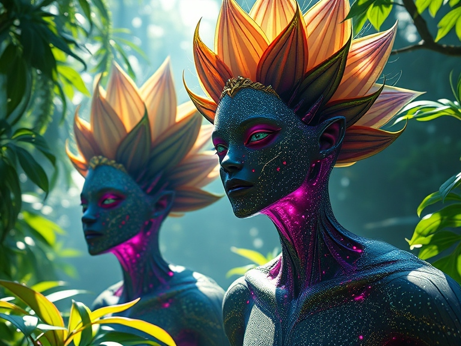
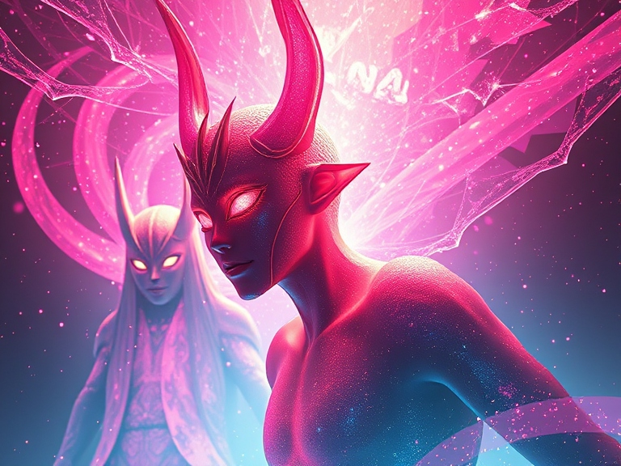

Skyrin (Skyfolk)
Description: Ethereal beings with feathered wings, hailing from floating cities in the clouds. They excel in agility and aerial combat.
Requirements: None.
Bonuses: +2 Dexterity, +1 Wisdom.
Perks:
- Flight: Can fly up to 30 feet per turn.
- Keen Eyes: Advantage on perception checks related to sight.
Initial Skills:
- Glide: Reduce fall damage by half.
- Wind Whisper: Communicate basic ideas with nearby creatures via subtle wind currents.
Emberkin
Description: Fire-infused humanoids born in volcanic regions, with glowing eyes and ember-like skin.
Requirements: Cannot be aligned with water-based deities.
Bonuses: +2 Strength, +1 Charisma.
Perks:
- Fire Resistance: Halve damage from fire-based attacks.
- Heat Aura: Small creatures that touch you take 1 fire damage.
Initial Skills:
- Flame Burst: Emit a small flame, dealing 1d6 fire damage to enemies in a 5-foot radius.
- Ignite: Light a flammable object or area within touch.
Frostborn
Description: Hardy creatures from icy tundras with a natural affinity for frost and survival.
Requirements: Cannot be aligned with fire-based deities.
Bonuses: +2 Constitution, +1 Intelligence.
Perks:
- Cold Resistance: Halve damage from cold-based attacks.
- Frostbite Touch: Enemies you strike in melee combat have their movement halved for 1 turn.
Initial Skills:
- Ice Shard: Launch a small shard of ice, dealing 1d8 cold damage.
- Survivalist: Gain proficiency in survival-related tasks.
Stonekin
Description: Sturdy beings carved from ancient stone, often serving as protectors of sacred sites.
Requirements: None.
Bonuses: +2 Strength, +1 Constitution.
Perks:
- Natural Armor: Base AC is 13 without armor.
- Immovable: Advantage on saving throws against being pushed or knocked prone.
Initial Skills:
- Earthquake Stomp: Shake the ground in a 5-foot radius, knocking enemies prone.
- Stone Meld: Blend into rocky terrain for stealth.
Shadowkin
Description: Mysterious beings born of shadow, adept at stealth and subterfuge.
Requirements: None.
Bonuses: +2 Dexterity, +1 Charisma.
Perks:
- Darkvision: See in darkness up to 60 feet.
- Shadow Step: Teleport up to 15 feet in dim light or darkness.
Initial Skills:
- Silent Movement: Gain proficiency in stealth.
- Shadow Veil: Create a 5-foot sphere of magical darkness.
Celestian
Description: Radiant beings of divine light, often seen as emissaries of gods.
Requirements: Cannot have evil alignment.
Bonuses: +2 Wisdom, +1 Charisma.
Perks:
- Healing Light: Heal 1d6 HP as a bonus action.
- Radiant Resistance: Halve damage from radiant attacks.
Initial Skills:
- Lightbeam: Emit a beam of light, dealing 1d8 radiant damage.
- Holy Aura: Allies within 5 feet gain +1 to saving throws.
Deepkin
Description: Amphibious humanoids who dwell in underwater cities, excelling in aquatic combat.
Requirements: Cannot be aligned with fire-based deities.
Bonuses: +2 Dexterity, +1 Constitution.
Perks:
- Amphibious: Can breathe both air and water.
- Swim Speed: Swim at 30 feet per turn.
Initial Skills:
- Water Bolt: Launch a bolt of water, dealing 1d6 damage.
- Tidal Push: Push enemies 5 feet away in water.
Ironblood
Description: Metallic-skinned beings with unparalleled durability, forged in the heart of mountains.
Requirements: None.
Bonuses: +2 Constitution, +1 Strength.
Perks:
- Metallic Resilience: Advantage on saving throws against poison.
- Iron Grip: Cannot be disarmed.
Initial Skills:
- Armor Bond: Gain +1 AC when wearing metal armor.
- Metal Sense: Detect nearby metals within 15 feet.
Greensoul
Description: Plant-like humanoids connected to nature, flourishing in forests and jungles.
Requirements: Cannot have destructive tendencies toward nature.
Bonuses: +2 Wisdom, +1 Dexterity.
Perks:
- Photosynthesis: Regain 1 HP during short rests in sunlight.
- Thorn Skin: Enemies who hit you with melee attacks take 1 piercing damage.
Initial Skills:
- Entangle: Trap enemies in a 10-foot radius with vines.
- Herbal Knowledge: Identify and use plants for healing.
Voidling
Description: Enigmatic beings touched by the void, wielding strange and unpredictable powers.
Requirements: None.
Bonuses: +2 Intelligence, +1 Dexterity.
Perks:
- Void Resistance: Halve damage from psychic attacks.
- Chaotic Aura: Random beneficial effect occurs once per long rest.
Initial Skills:
- Warp Step: Teleport up to 10 feet.
- Void Bolt: Deal 1d8 psychic damage to a single target.